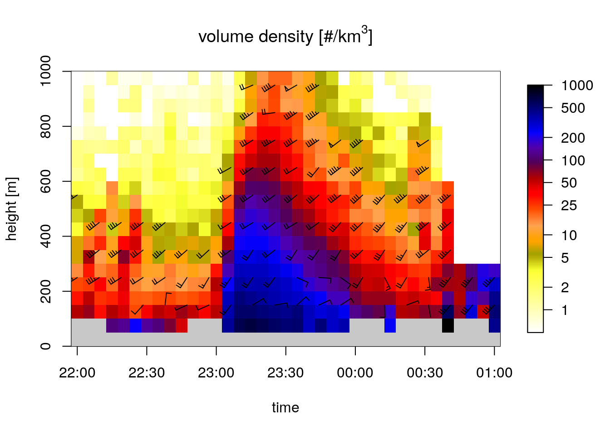
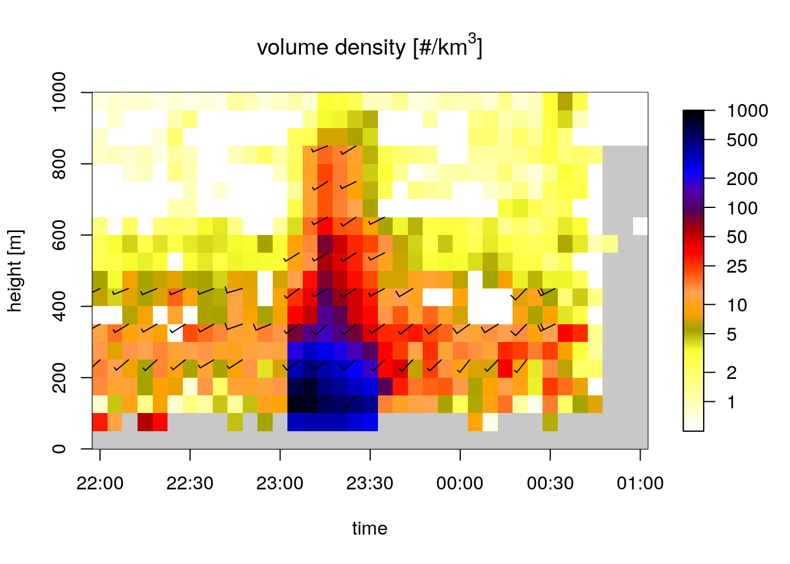

1 Selecting firework take-off moment
For this study we select the moment of ‘en masse’ take-off of birds at the turn of the year. To make sure birds are still fairly ‘close’ to the take-off habitat, we therefore focus on the period where the increase in VIR (Vertically Integrated Reflectivity) is the highest. Based on experience, one would expect this to occur between 00:05 and 00:15 on January 1st, as people tend to light the fireworks right after they have shared New Year’s wishes with each other.
1.1 Processing environment
We use vol2bird included in the bioRad package (Dokter et al. 2019) to calculate the vertical profiles of reflectivity, from which we determine the exact take off moment of birds. This implies we assume birds take to the skies everywhere simultaneously, but that seems a realistic assumption given that the lighting of fireworks is synchronised by the national time, rather than the local time of sunset/sunrise.
1.2 Calculate the vertical profiles
We calculate vertical profiles for the period between December 31st, 2017 22:00 and 01:00 UTC on January 1st, 2018, which corresponds with 23:00 til 02:00 local Amsterdam time (UTC + 1). It is not necessary to generate so many vp files, but it gives a better temporal overview of the event if we add some ‘temporal padding’ around the fireworks event.
Beware: to calculate the vertical profiles, a running instance of Docker is required. This code chunk will only run in full-reproduction mode.
See the appendix on [generating VPs for Den Helder][generating-vps-for-den-helder-radar] for a more detailed explanation why we limit vp generation of Den Helder to certain azimuths.
fireworks_scans <- Sys.glob(file.path("data/raw/pvol/fireworks-2017-2018", "*_ODIM.h5"))
cat("Files left to process: ", length(fireworks_scans), "\n")
i <- 1
for (scan in fireworks_scans) {
if (i %% 5 == 0) {
cat(i, "... ")
}
vpfile_out <- sub("raw/pvol/fireworks-2017-2018", "processed/vp/fireworks-2017-2018", scan)
if (grepl("RAD_NL61", vpfile_out)) {
try(calculate_vp(scan, vpfile = vpfile_out, verbose = FALSE, mount = dirname(fireworks_scans[1]),
azim_min = 90, azim_max = 200, h_layer = 50, n_layer = 80))
} else {
try(calculate_vp(scan, vpfile = vpfile_out, verbose = FALSE, mount = dirname(fireworks_scans[1]),
h_layer = 50, n_layer = 80))
}
i <- i + 1
}1.3 Generate time series of vertical profiles
We can now generate a time series of vertical profiles (a VPTS) and plot the bird densities to get an idea of what was going on during NYE of 2017-2018.
fw_hrw_vpts <- Sys.glob(file.path("data/processed/vp/fireworks-2017-2018", "*NL62*")) %>%
read_vpfiles() %>%
bind_into_vpts() %>%
regularize_vpts(interval = "auto")
fw_dhl_vpts <- Sys.glob(file.path("data/processed/vp/fireworks-2017-2018", "*NL61*")) %>%
read_vpfiles() %>%
bind_into_vpts() %>%
regularize_vpts(interval = "auto")
start <- as.POSIXct("2017-12-31 22:00:00")
end <- as.POSIXct("2018-01-01 01:00:00")
indexes_hrw <- which(fw_hrw_vpts$datetime >= start & fw_hrw_vpts$datetime <= end)
indexes_dhl <- which(fw_dhl_vpts$datetime >= start & fw_dhl_vpts$datetime <= end) # Should mostly be identical
title_hrw <- expression("Herwijnen: volume density [#/km"^3 * "]")
title_dhl <- expression("Den Helder: volume density [#/km"^3 * "]")
plot(fw_hrw_vpts[indexes_hrw], main = title_hrw)

## projecting on 300 seconds interval grid...
## projecting on 300 seconds interval grid...Both plots for Herwijnen and Den Helder show exactly what we would expect: comparatively low densities of birds aloft leading up to midnight (23:00 CET), then suddenly a strong increase of birds right after midnight. For Den Helder this peak appears much more pronounced, whereas for Herwijnen the period of disturbance seems to take considerably longer. This is probably due to the vastly different environment around the radar site: Herwijnen is located solidly in the center of the country, whereas Den Helder is located close to the coast on a ‘peninsula’ with much less land in the surroundings, pronounced by vol2bird only taking the rangegates within 5-35km of the radar into account.
1.4 Identifying moment of take-off
We integrate the time series of vertical profiles, so we can calculate the VIR derivatives and determine in what volume scan birds really take to the skies for each radar separately.
integrated_hrw <- integrate_profile(fw_hrw_vpts)
integrated_dhl <- integrate_profile(fw_dhl_vpts)
integrated_hrw$vir_deriv <- c(NA, diff(integrated_hrw$vir, 1))
integrated_dhl$vir_deriv <- c(NA, diff(integrated_dhl$vir, 1))
integrated_hrw$radar <- "Herwijnen"
integrated_dhl$radar <- "Den Helder"
integrated <- rbind(integrated_hrw, integrated_dhl)
integrated_l <- integrated %>%
pivot_longer(-c("datetime", "radar"), names_to = "variable", values_to = "value") %>%
filter(variable == "vir" | variable == "vir_deriv") %>%
filter(datetime >= start & datetime <= end)
max_vir_deriv <- integrated_l %>%
filter(variable == "vir_deriv") %>%
drop_na() %>%
group_by(radar) %>%
summarize(max_value = max(value), datetime = datetime[which.max(value)], .groups = "drop_last")
theme_set(theme_bw())
ggplot(integrated_l, aes(x = datetime)) +
geom_line(aes(y = value, colour = radar, linetype = variable)) +
scale_x_datetime(breaks = "10 min", date_labels = "%H:%M", expand = c(0, 0)) +
scale_color_manual(values = c("blue", "red")) +
scale_linetype_discrete(name = "Line type", labels = c("VIR", expression(paste(Delta,"VIR/scan")))) +
labs(title = "Time series of Vertically Integrated Reflectivities (VIR)",
subtitle = "NYE 2017-2018",
x = "Time (CET)",
y = "VIR",
colour = "Radar",
linetype = "Linetype") +
theme(axis.text.x = element_text(angle = -90),
panel.grid.minor = element_blank())
The plot shows a rapid increase in VIR in the first 15 and 20 minutes after midnight (23:00 CET) for the Den Helder and Herwijnen radar respectively. After that period, VIR starts to drop, faster for Den Helder than for Herwijnen, possibly as a result of birds dispersing from the North Holland mainland towards the IJsselmeer area, which we have deliberately excluded from the generation of the vertical profiles (by selecting azimuths that are above land).
To reduce the effect of bird dispersal on our analysis, we will focus only on the first 5 minute-scan during which VIR grows rapidly. That is from 23:05 CET until 23:10 CET.
pvol_folder <- "data/raw/pvol/fireworks-2017-2018/"
scan_timestamp <- lubridate::ymd_hm("2017-12-31 23:05")
pvol_hrw_path <- paste(pvol_folder, "RAD_NL62_VOL_NA_", format(scan_timestamp, "%Y%m%d%H%M"), "_ODIM.h5", sep = "")
pvol_dhl_path <- paste(pvol_folder, "RAD_NL61_VOL_NA_", format(scan_timestamp, "%Y%m%d%H%M"), "_ODIM.h5", sep = "")
save(pvol_hrw_path, pvol_dhl_path, file = "data/processed/pvol_selection.RData")So we will mainly focus on working with the following polar volume files:
- Herwijnen:
RAD_NL62_VOL_NA_201712312305_ODIM.h5 - Den Helder:
RAD_NL61_VOL_NA_201712312305_ODIM.h5
1.5 Determining maximum range from radar to detect birds
We can assume that the flight altitudes derived from vol2bird are representative for flight altitudes throughout the country. Given that most of the disturbance happens at comparatively low altitudes, the radar is likely to ‘overshoot’ this entirely at substantial distances away from the radar where compensating for range-effects (e.g. using Kranstauber et al. (2020)) will thus have undesired consequences. Therefore we need to determina a maximum range at which we could still feasibly measure birds aloft. We can do so by inspecting the vpts plots from before, but now focussing on the lowest 1km. Notice how we are generating VPTSs with 50m height bins vs. the standard 100m height bins, so we can pinpoint more precisely at what altitude densities drop off.


We can now see that above 600m ASL or so the density starts to drop substantially, so we will set this as the altitudinal cutoff to determine the range up to which we will be using the data coming from the range-bias correction (Kranstauber et al. 2020). Although birds are somewhat lower in height overall in Den Helder than Herwijnen, this is an acceptable threshold as Herwijnen anyways covers much more land area within our study domain than Den Helder, and thus a more representative range-bias correction for Herwijnen is more important than Den Helder.
Now we can calculate the distance at which that height (600m) is the height of the lowest elevation (0.3 degrees) and round to the nearest kilometer.
altitude_cutoff <- 600
ranges <- seq(0, 180000, 100)
beamheights <- beam_height(ranges, 0.3)
nearest_index <- which(abs(beamheights - altitude_cutoff) == min(abs(beamheights - altitude_cutoff)))
slantrange <- ranges[nearest_index]
distance_cutoff <- plyr::round_any(beam_distance(slantrange, 0.3), 1000)
distance_cutoff## [1] 66000So at roughly 66 kilometers from the radar, the lowest elevation scan pierces the sky at an altitude of 600m.
References
Dokter, Adriaan M., Peter Desmet, Jurriaan H. Spaaks, Stijn van Hoey, Lourens Veen, Liesbeth Verlinden, Cecilia Nilsson, et al. 2019. “bioRad: Biological Analysis and Visualization of Weather Radar Data.” Ecography 42 (5): 852–60. https://doi.org/10.1111/ecog.04028.
Kranstauber, Bart, Willem Bouten, Hidde Leijnse, Berend-Christiaan Wijers, Liesbeth Verlinden, Judy Shamoun-Baranes, and Adriaan M Dokter. 2020. “High-Resolution Spatial Distribution of Bird Movements Estimated from a Weather Radar Network.” Remote Sensing 12 (4). Multidisciplinary Digital Publishing Institute: 635. https://doi.org/10.3390/rs12040635.